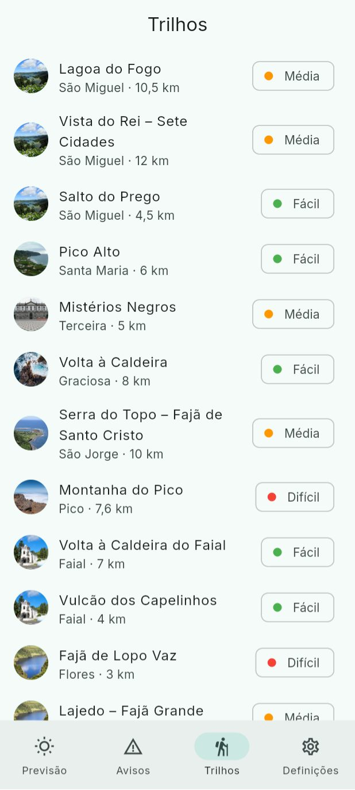
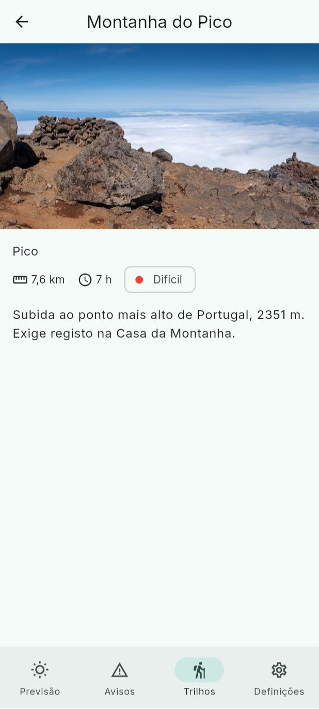
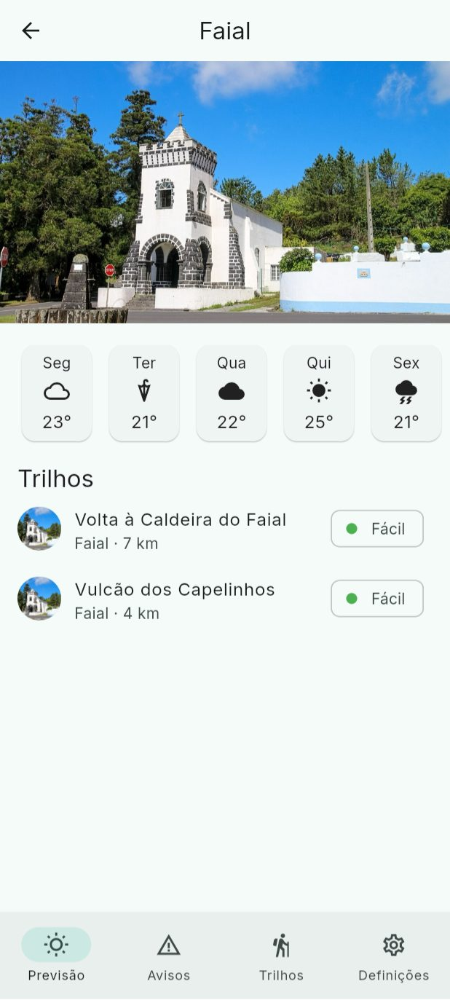

Lesson 10 · Week 6 · Monday, 12 October 2026 · 16:00 to 18:00
Navigation in depth and mini-project
Part one: we go over the navigation from lesson 9 again, slowly. Routes as a tree, push and go, and StatefulShellRoute piece by piece. Part two: the first graded mini-project, individual. You add a new tab, Trilhos (trails), to Tempo Açores, with a list and a detail screen.
Repository: pdm-aula-10
By the end of this lesson you can
Read a router.dart and draw the route tree it declares.
Explain what GoRoute, StatefulShellRoute and StatefulShellBranch do, and why each tab keeps its own stack.
Choose between context.push and context.go.
Add a new tab to an app on your own, with a list, a detail screen and a route with a parameter.
Routes are a tree
Dashed: what you add today in the mini-project. A child route does not start with /: its path is joined to its parent's.
Read it top to bottom: GoRouter has a frame, the frame has one branch per tab, each branch has its routes.
/island/pico = route / + child island/:id. That is why Pico opens inside the Previsão tab, with the bar visible.
Three pieces, one question each
Piece
Answers
In Tempo Açores
GoRoute
Which screen appears at this path?
/alerts opens AlertsScreen
StatefulShellRoute
What surrounds all the tabs?
A Scaffold with only the NavigationBar
StatefulShellBranch
Which routes belong to this tab?
Previsão: / and island/:id
The shell is only the middle; the bar is drawn around it.
Ask the class You open Pico, go to Avisos and come back to Previsão. Why is Pico still there, and not the grid?
The frame's code
StatefulShellRoute.indexedStack(
builder: (context, state, shell) => Scaffold(
body: shell, // the current tab, with its own stack
bottomNavigationBar: NavigationBar(
selectedIndex: shell.currentIndex,
onDestinationSelected: (i) =>
shell.goBranch(i, initialLocation: i == shell.currentIndex),
destinations: const [
NavigationDestination(
icon: Icon(Icons.wb_sunny_outlined),
label: 'Previsão',
),
NavigationDestination(
icon: Icon(Icons.warning_amber),
label: 'Avisos',
),
NavigationDestination(
icon: Icon(Icons.settings_outlined),
label: 'Definições',
),
],
),
),
branches: [
// one StatefulShellBranch per tab, in the same order
],
),
shell.currentIndex: which tab is active. The bar highlights it.
shell.goBranch(i): switches to tab i, without destroying the others.
Destination i in the bar opens branch i. The order must be the same in both lists.
Ask the class You add a NavigationDestination and forget the branch. What happens when you tap the new tab?
push or go?
push thinks in stacks; go thinks in addresses. With go, go_router builds the stack for the path: /trails underneath, /trails/montanha-do-pico on top.
Use it when
Example
context.push
You open a detail on top of the screen you are on
From the grid to an island; from the list to a trail
context.go
You go somewhere else in the app, which has its own stack
From the island to a trail in the Trilhos tab; a link in a notification
Recipe: a new tab
The screen. A widget with a Scaffold and an AppBar, like the other tabs.
The destination in the bar. A NavigationDestination with an icon and a label, in the position where you want to see it.
The branch. A StatefulShellBranchin the same position, with the GoRoute for the tab's path.
The detail, if there is one. A child route inside that GoRoute, with the parameter: ':id', with no leading /.
The detail screen receives the id, looks the object up in the data and handles not finding it.
Name pdm-miniprojeto, tick Private, Create repository.
In your repository, open Settings, then Collaborators. Click Add people and type Tiago-Rocha.
From the green Code button, copy the URL. In VS Code, press Ctrl+Shift+P, choose Git: Clone and paste the URL. Pick the folder C:\dev and click Open. It is what you did in lesson 3.
In the VS Code terminal, flutter pub get; pick your Android or Chrome, and F5.
First commit, all together: open README.md and write on the first line **Student:** Maria Silva Medeiros · 2024123, with your name and number. Commit with the message Student name in the README and Sync Changes. Open your repository on GitHub: the name shows at the top.
In the app: Tempo Açores with three tabs, as at the end of lesson 9.
Saving and submitting
After each finished TODO
Source Control view (Ctrl+Shift+G).
A message that says what changed: Trilhos tab with its routes.
Commit, then Sync Changes.
Refresh your repository page on GitHub: is the commit there?
To submit
Last commit, with Sync, before Wednesday at 16:00.
In the README: what you did, what is missing, and two screenshots (list and detail).
Nothing else. The teacher sees your repository through the collaborator invitation: the submission is the repository.
What counts What is on GitHub at the deadline. A commit without Sync only exists on your laptop, and for grading it does not exist.
The data: lib/data.dart
enum Difficulty {
easy('Fácil', Colors.green),
medium('Média', Colors.orange),
hard('Difícil', Colors.red);
// ...
}
class Trail {
final String id; // used in the route: /trails/lagoa-do-fogo
final String name;
final String islandId; // the id of an Island: 'sao-miguel', 'pico', ...
final double distanceKm;
final String duration; // '3 h 30'
final Difficulty difficulty;
final String description;
/// The island of this trail, with the name and the photo.
Island get island => islands.firstWhere((i) => i.id == islandId);
// and distance: '10,5 km'
}
const trails = [
// 13 trails, at least one on each island
];
trail.island.image gives the photo of the trail's island; trail.island.name, its name.
trail.distance comes already formatted: '10,5 km'.
trail.difficulty.label and trail.difficulty.color: always show the text, not just the colour.
What it should look like

21
Trilhos (TODO 1 and 2): one ListTile per trail. On the left the island photo in a CircleAvatar; the name; below it "Island · distance"; on the right the difficulty, with a coloured dot and text.

3
Detail (TODO 3): the name in the AppBar, with the back arrow. The island photo at the top; below it, the island, a row with the distance, the duration and the difficulty, and the description.

4
Island (TODO 4): below the days, the title "Trilhos" and the same rows as the list, only with that island's trails.
It does not have to match pixel for pixel, but it must have these elements. Tip: the list row and the island row are the same. Make one widget for the row and use it in both places.
TODO 1 and 2: the tab and the list
TODO 1 In lib/router.dart: a NavigationDestination Trilhos (Icons.hiking) and its StatefulShellBranch, in the same position. The GoRoute'/trails' opens TrailsScreen; inside it, the child route ':id' opens TrailScreen.
In the app: four tabs in the bar. Trilhos opens a screen that says "Ainda sem trilhos". In Chrome, the URL is /trails.
TODO 2 In lib/trails_screen.dart: a ListView.builder with one ListTile per trail. The island photo (CircleAvatar with AssetImage), name, island and distance, and the difficulty. onTap: context.push('/trails/${...}').
In the app: the 13 trails, from São Miguel to Corvo. Tapping one opens a screen with the id in the title; the back arrow returns to the list.
Finished a TODO? Commit and Sync Changes before moving on to the next one.
TODO 3 and 4: the detail and the island
TODO 3 In lib/trail_screen.dart: look up the trail with this id in trails, as IslandScreen does with the islands. Show the island photo, the name, the distance, the duration, the difficulty and the description. If the id does not exist, "Trilho não encontrado".
In the app: Montanha do Pico with a photo, 7,6 km, 7 h, Difícil and the description. In Chrome, /trails/xyz shows "Trilho não encontrado".
TODO 4 In lib/island_screen.dart, below the days: a "Trilhos" title and the trails of that island (trails.where(...) with islandId). Tapping one: context.go('/trails/${...}').
In the app: Faial shows two trails. Tapping the Caldeira switches to the Trilhos tab, with the Caldeira open. Go back to Previsão: Faial is still there.
final island = islands.where((i) => i.id == id).firstOrNull;
if (island == null) {
// an id that does not exist, for example a mistyped link
return Scaffold(
appBar: AppBar(),
body: const Center(child: Text('Ilha não encontrada')),
);
}
Extras, for those who finish
A difficulty filter at the top of the list (SegmentedButton or FilterChip, with setState).
Search trails by name, with a message when nothing matches (like the island search).
On the island, the number of trails in the title and a message when there are none.
A Hero transition of the photo between the list and the detail.
Extras do not count towards the grade. The four TODOs first.
Submission and grading
Today, before you leave Repository created from the template, teacher invited as a collaborator, first commit with your name, and the TODOs started.
Deadline: Wednesday, 14 October, at 16:00, at the start of lesson 12. What counts is the last commit on GitHub at that time: always Sync.
The submission is the repository. No collaborator invitation and no name in the README, no submission.
It is worth 2 points (10 % of the final grade):
TODO
Points
1: the Trilhos tab, with its routes
0.5
2: the trail list
0.5
3: the detail, with the "not found" case
0.5
4: the trails on the island, with context.go
0.5
If the app does not compile, the grade is 0. You may use AI, but the teacher may ask you in class to explain your code. Code you cannot explain does not count.
See you tomorrow
Next lesson
Tuesday, 13 October, 8:30 to 10:30: code quality, lints, organisation and git. Bring the mini-project as it is: we will work on it.
Mini-project deadline: Wednesday, 14 October, at 16:00, on GitHub.